Home
About
Breaking

{% block main %}{% endblock %}
×
Settings
Leave blank for default settings. You can search articles up to a month old.
Sources
Select All
{% for source in sources %}
{{ source }}
{% endfor %}
General
From:
To: